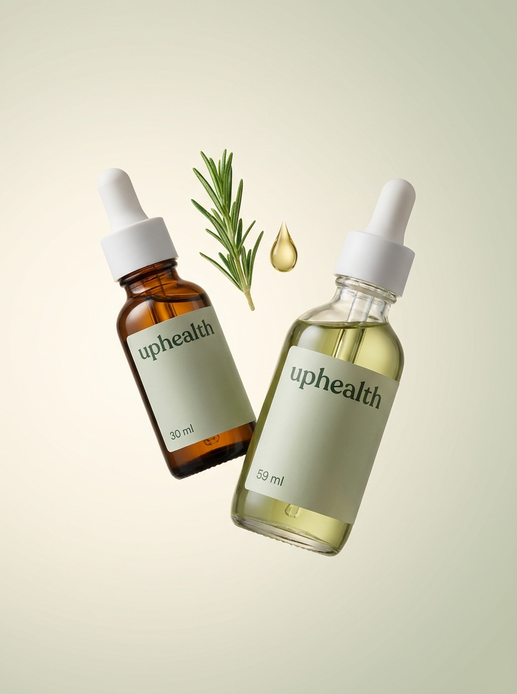
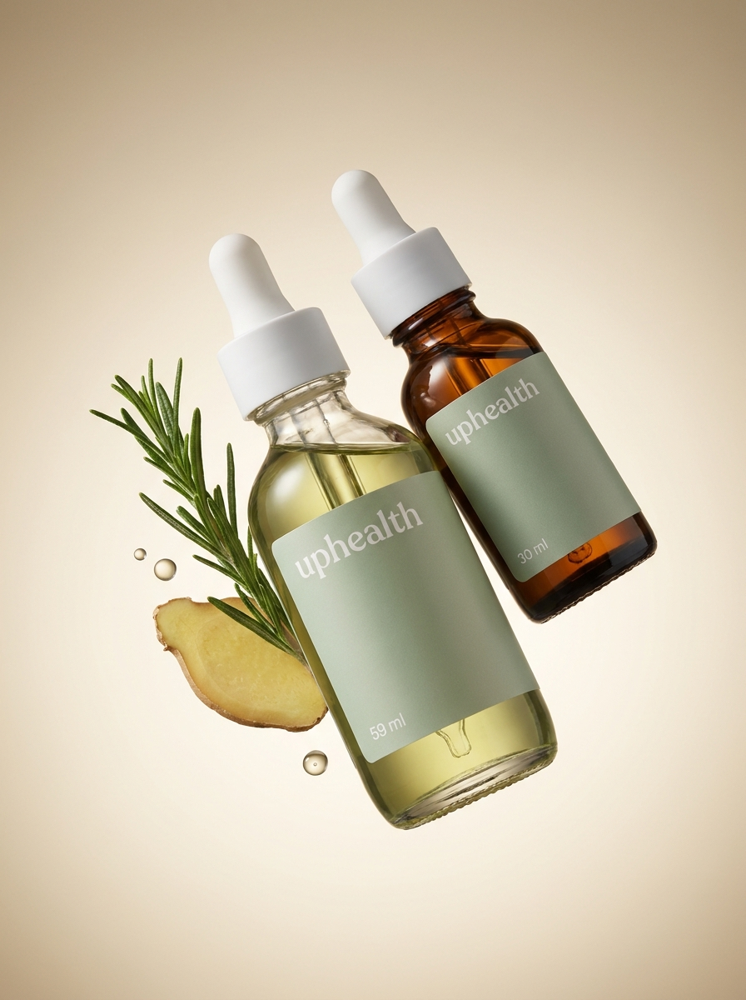
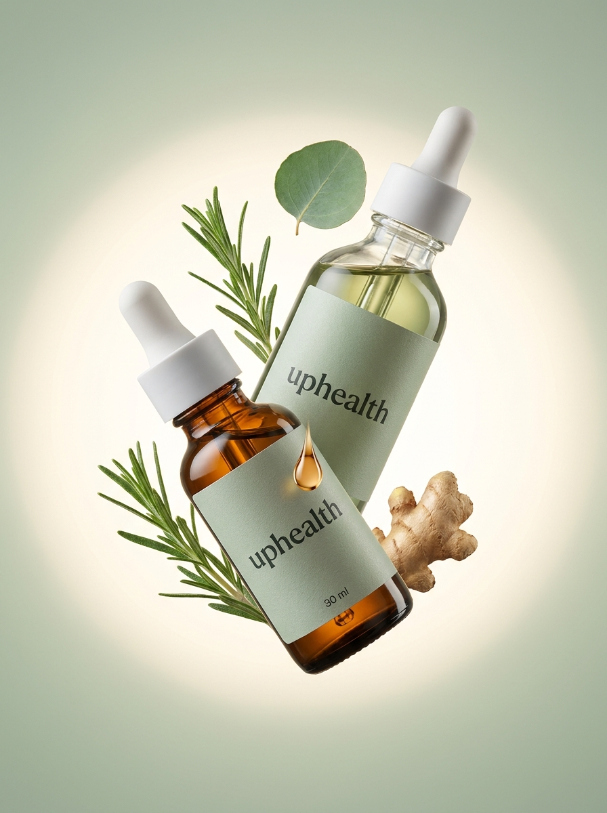
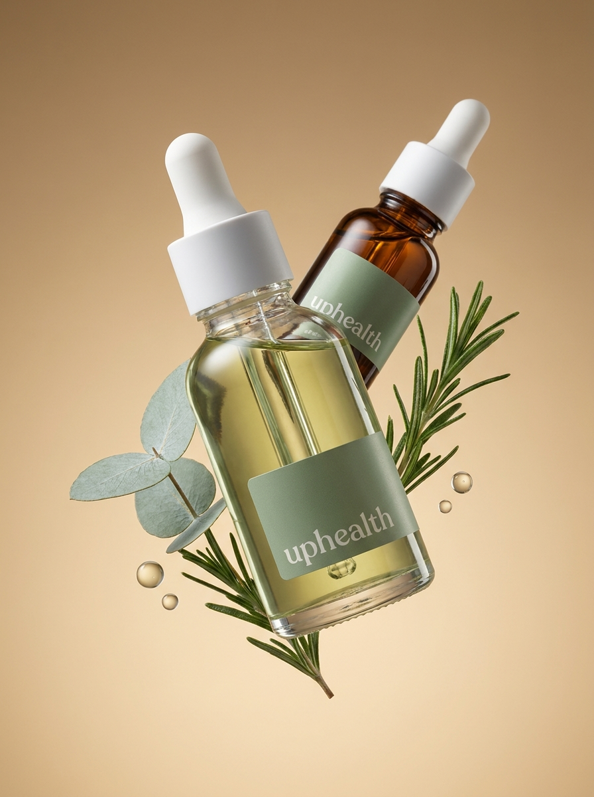
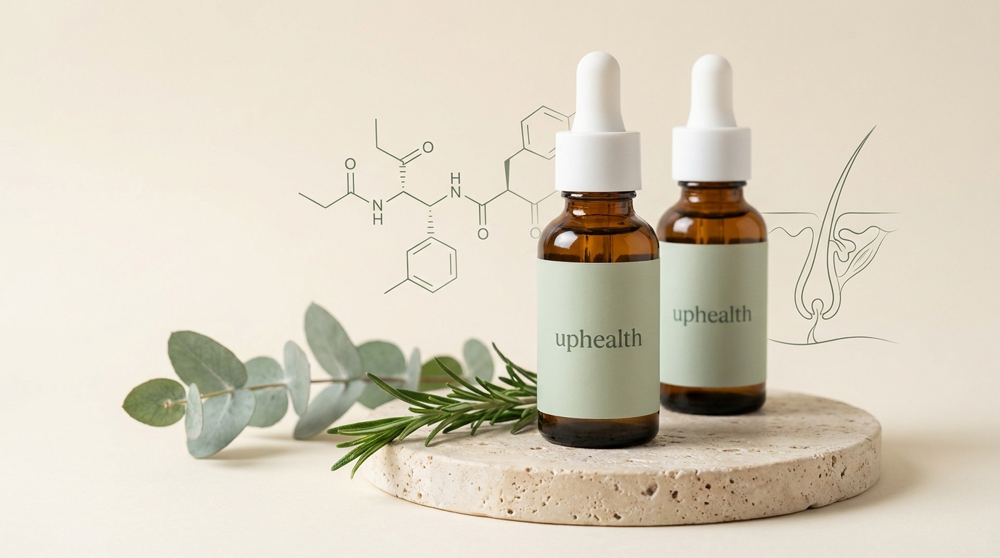
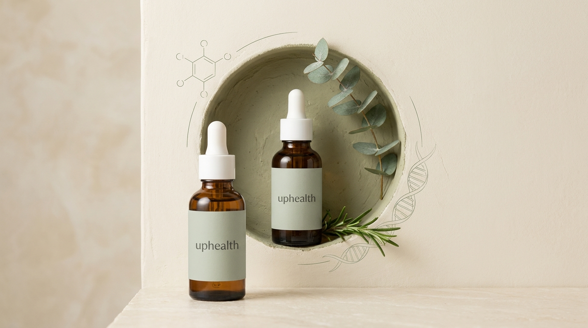
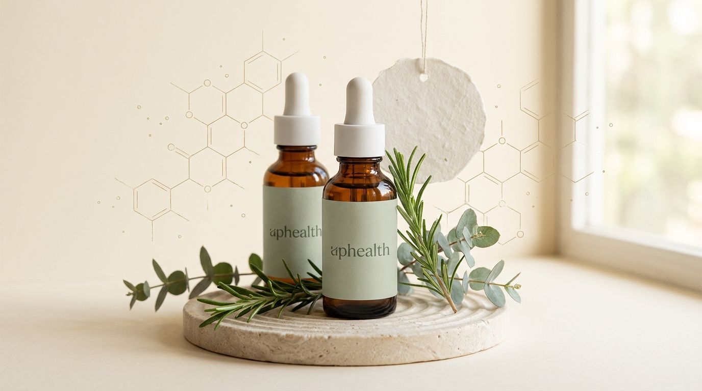
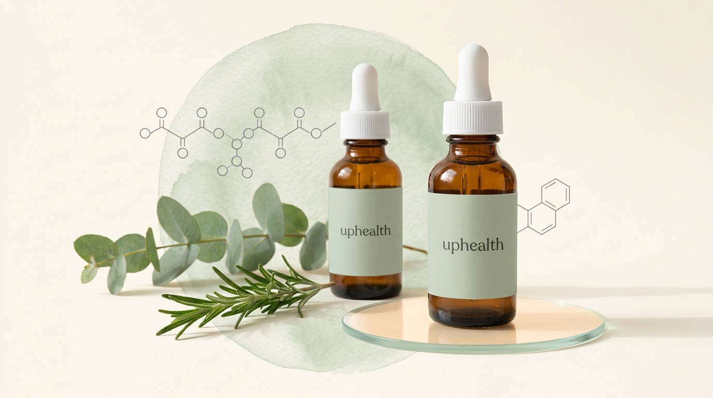

Hero-картинка: «летящая охапка» (стиль главной hims)
Два продукта клиента — Peptide Serum (янтарный флакон, 30 мл) и Botanical Serum
(прозрачный флакон с зелёной сывороткой, 59 мл) — парят в воздухе плотной группой, под наклоном,
рядом растения из состава (розмарин, имбирь, эвкалипт) и капли. Минимальный фон. Дальше эти
картинки можно оживить в зацикленное видео.

F1 — «Пара». Флаконы разведены в лёгкое «V», между ними розмарин и капля.
Самый чистый и спокойный, фон слоновая кость → шалфей.

F2 — «Охапка, нижний ракурс». Плотный пучок: флаконы прижаты друг к другу,
розмарин + срез имбиря + капли. Тёплый песочный фон, ближе всего к референсу hims.

F3 — «Крест с ореолом». Флаконы крест-накрест, вокруг мягкое световое пятно,
много зелени, имбирь, падающая капля. Самый «природный».

F4 — «Диагональ». Пучок летит по диагонали, ветки веером за флаконами,
капли вдоль движения. Самый динамичный, хорошо ляжет на анимацию.
Предыдущие статичные варианты (композиция на поверхности)

Вариант 1 — «Травертин». Флаконы на фактурном камне, слева пептидная формула,
справа тонкий рисунок волосяного фолликула (в тему продукта). Ветки лежат у основания.

Вариант 2 — «Ниша». Компактный круг — ниша из фактурной шалфейной штукатурки,
один флакон в ней, второй ближе к камере. Спираль ДНК и молекула по краям круга.

Вариант 3 — «Рифлёный камень». Обильная зелень, подвешенный круг из бумаги
ручного литья, крупные молекулярные сетки. Минус: на этикетках опечатка
«aphealth» — если выберете этот, перегенерирую.

Вариант 4 — «Акварельный круг». Круг — мягкая акварельная заливка с текстурой
бумаги, передний флакон на стеклянном диске, формулы слева и справа.